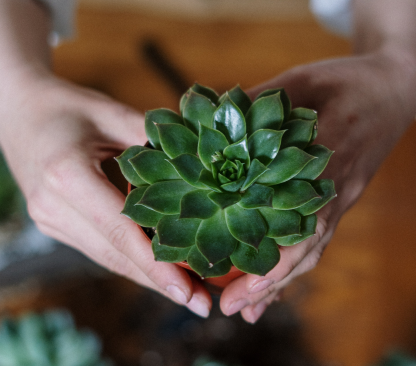

Veamos por qué tener plantas dentro de su hogar es bueno para su salud. Los seres humanos y las plantas coexisten y dependen unos de otros para el sustento. Inhalamos oxígeno y liberamos dióxido de carbono al medio ambiente. Durante el día, las plantas hacen lo contrario, absorben nuestro dióxido de carbono y liberan más oxígeno en el aire. Durante la noche, esta parte de la fotosíntesis cesa, excepto cuando se trata de ciertas suculentas y cactus, que continúan liberando oxígeno durante toda la noche. Agregar suculentas y cactus a su hogar puede ayudar a mantener su aire fresco y también eliminar algunas de las toxinas del medio ambiente.

Es posible que hayas notado que algunas de tus suculentas tienen una capa cerosa, casi como polvo, en sus hojas. Este recubrimiento se llama cera epicuticular o farina. Piensa en ello como un protector solar natural. La película cerosa protege las suculentas de los fuertes rayos del sol y puede ayudar a evitar que las hojas se quemen si reciben demasiada luz. Ten cuidado al manipular plantas con farina, ya que puedes limpiar fácilmente el recubrimiento. La cera epicuticular no volverá a crecer rápidamente, si es que lo hace, por lo que si la quitas accidentalmente, corres el riesgo de dañar permanentemente tu planta suculenta.
Una de las mayores características de las suculentas es la gran variedad. Puedes encontrar suculentas de todas las formas y colores. Si tienes un proyecto específico en mente o simplemente quieres darle vida a tu jardín, la madre naturaleza lo tiene cubierto. Sin embargo, la diversidad de suculentas no se detiene ahí. Desde plantas diminutas hasta árboles gigantes, la variedad de tamaños en suculentas y cactus es impresionante.